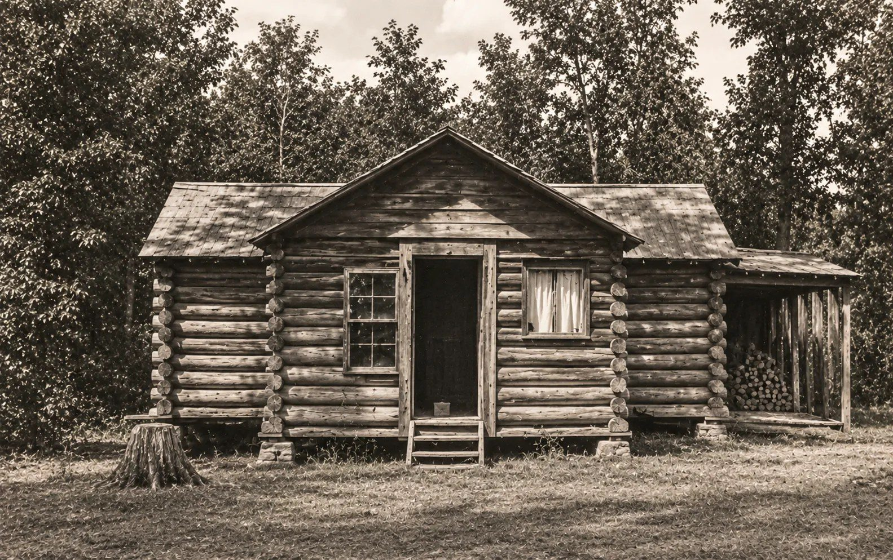

This is my family, as far back as the records go.
Four digits.
This is my family, as far back as the records go.
Four digits.
Family archive
TryWhere is Thomas Graham buried?Nancy Ann Graham's widow's claimWho was alive in 1850?Graham land in Section 28Grahams MillRickwoodWhat did the farms grow in 1860?Tucker

The Old HomeplaceConnie Gilbreath Belcher's essay on pioneer and farm life, from the 1990 family book.